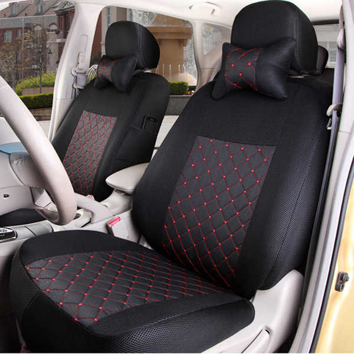

Tapiceria de Tela
Caracteristicas
El paño de tela es un tipo de tapicería muy recomendado para coches familiares. Por esto, es una de las tapicerías de coche más utilizada para los vehículos estándar y suele ser una característica de serie.
Perdurabilidad: La tela también es un material que perdura bastante en el tiempo, sin embargo es más susceptible de desteñirse, desgastarse o mancharse. Es un material más delicado que el cuero.
Perdurabilidad: La tela también es un material que perdura bastante en el tiempo, sin embargo es más susceptible de desteñirse, desgastarse o mancharse. Es un material más delicado que el cuero.
Coste: es la opción más barata ya que habitualmente viene de serie con el vehículo, aunque este material ofrece muchas opciones de personalización en diseño y color.
